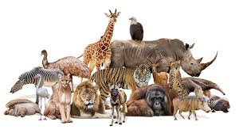

Animals are multicellular, eukaryotic organisms comprising the biological kingdom Animalia. With few exceptions, animals consume organic material, breathe oxygen, have myocytes and are able to move, can reproduce sexually, and grow from a hollow sphere of cells, the blastula, during embryonic development. Animals form a clade, meaning that they arose from a single common ancestor. Over 1.5 million living animal species have been described, of which around 1.05 million are insects, over 85,000 are molluscs, and around 65,000 are vertebrates. It has been estimated there are as many as 7.77 million animal species on Earth. Animal body lengths range from 8.5 μm (0.00033 in) to 33.6 m (110 ft). They have complex ecologies and interactions with each other and their environments, forming intricate food webs. The scientific study of animals is known as zoology, and the study of animal behaviour is known as ethology.